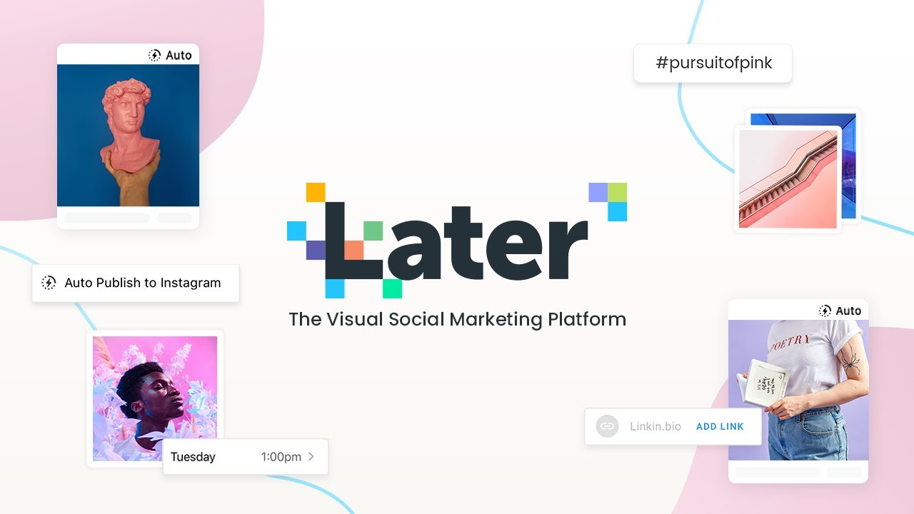
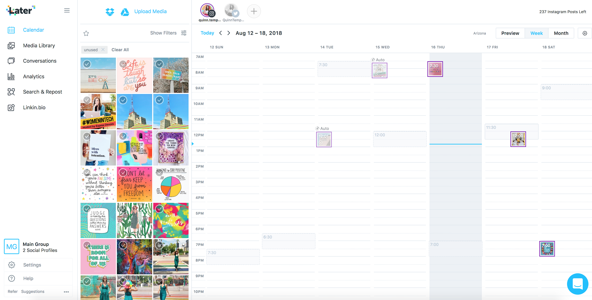

Managing Your content
1. Create a content calendar for the week/month
The next step in the planning process is to create a calendar with your schedule on it. What days and times of the week will you post content to your social channels? What messaging and creative copy will you use to encourage people to interact with you? On a calendar template, you can create a basic outline of what each day looks like for the week or month of the promotion. This can be achieved by going for easier option yet effective of purchasing yourself a standard calendar and adding in all your schedule dates on to it or going for the more modern version of using an online visual content calendar that maintains max organisation and and given you the capability of going back and editing anything you want to re schedule. A personal favourite is Later which is a social media marketing platform that helps companies and campaigns grow due to their beautiful and efficient templates/widget and tools that keep those companies up to date when releasing content to their audience.
 
2 .Monitor and respond
Now that you have got your calendar all up and ready their are few key tips when the time comes to post your content. Don't just leave your recently posted content alone, this isn't a rice cooker. This is a well-oiled social media machine, and while it may be running smoothly in the background, you must still participate. Simply being present on your profiles is part of managing social media like a professional and a well managed profile. You can set up alerts on your phone using the management tools we discussed earlier. As a result, if someone comments on your Instagram post or replies on Twitter, you will be able to respond quickly.
 "Infographics are used as a powerful tool to allow people to easily digest information through the use of visual data, charts, and statistics. With the proper use of color, proportion, and negative space, information can be transformed into memorable, attention-grabbing and even persuasive graphics."
"Infographics are used as a powerful tool to allow people to easily digest information through the use of visual data, charts, and statistics. With the proper use of color, proportion, and negative space, information can be transformed into memorable, attention-grabbing and even persuasive graphics."
3. Analyze and adjust
Take the time to review your analytics to determine what worked and what didn't. Maybe all of your early morning posts were a hit and people enjoyed what they saw, but your mid-afternoon posts were a total flop. Alternatively, one type of visual content or messaging sparked more engagement than another. Then, use and apply that knowledge you've learned to apply to your next campaign's tactics. Not every social media campaign will include all of these steps, but they serve as a good starting point. Your social media strategy should be tightly integrated into your overall Inbound Marketing strategy. That is, don't lose sight of your ultimate goals of increasing visits, leads, and customers.